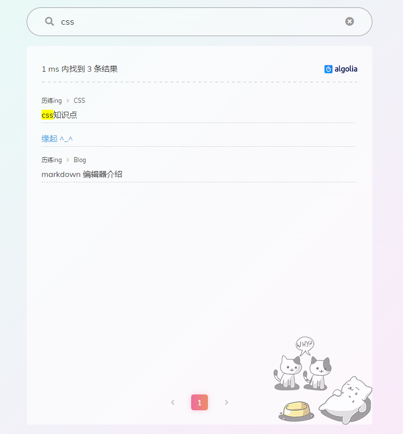
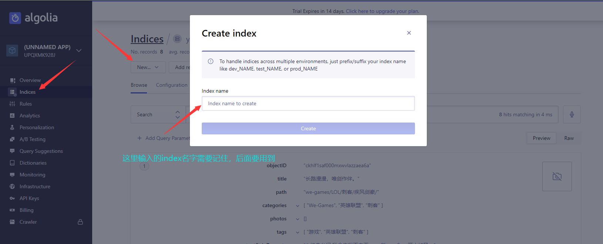
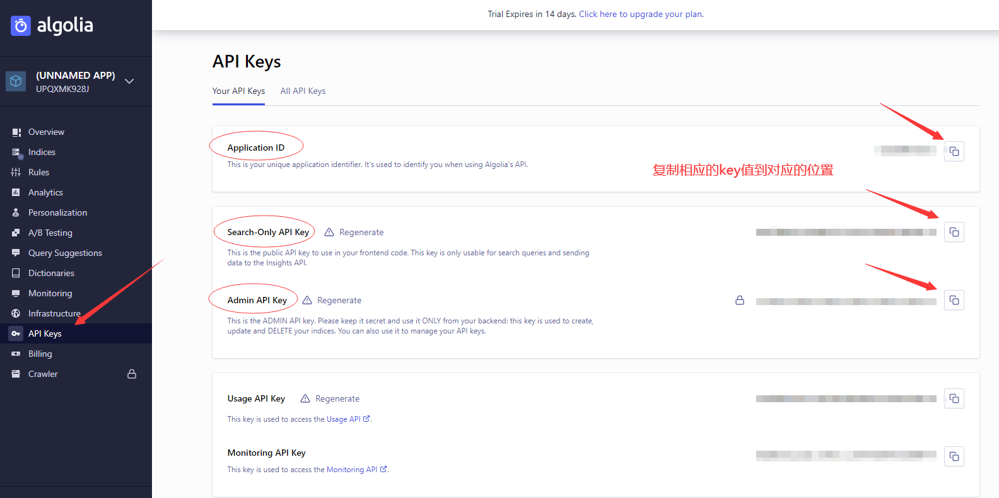

# 在博客中添加搜索功能
添加效果

开始添加
下载最新的 hexo 主题，因为新的主题已经集成了 algolia 搜索，可以省去很多配置和修改。去官网注册，也可以绑定 github 账号登录。去 algolia 官网，注册好以后进去新建一个 index。我们需要用到这个 index 的名字。

打开 API Keys 页面，里面的信息等会需要写到 hexo 的配置文件中

在根目录的站点配置文件_config.yml 中加入如下配置，参照上图的各种 key 值
- title- slug- path我用的是 shoka 主题，这主题默认配置好了以下这些配置，所以
无需手动配置。
重点：在 git bash 中执行hexo algolia把配置提交到 algolia 上。这一步是每次写完都要提交的
# 在文章中添加相册
在插入的图片最后一张末尾加上 {.gallery} 或 {.gallery data-height="120"} ，记得换行，不要跟在图片后面。
{.gallery} | |
# 这是排列起来 | |
{.gallery data-height="120"} | |
# 这是自定义高排列 |
# 添加评论功能
进入 Valine 官网，注册登录， 安照快速开始步骤进行。Valine 官网
在评论的时候填入对应 MD5 值，在评论区头像上右击自己的头像，后面有一段字符串例如：
https://gravatar.loli.net/avatar/131ab989394372ace9fd15f9fc257a75?size=80&d=mp中有，avatar 后面的字符串。记得在前面加上
-。
# 在博客中添加宠物
在自己的博客中安装 2D 宠物，
安装插件
选择自己喜欢的宠物，我在这里列出一部分宠物代码。
具体的安装：
npm install + 宠物代码例：npm isntall live2d-widget-model-tororo在站点配置文件中
_config.yml添加配置
这里需要注意的是，每一个宠物模型都需要
npm install + 宠物模型代码来安装才能使用，且安装以后需要在配置文件中配置use的模型值，值为你安装的宠物模型代码。最后运行部署就可以了。
# hexo 博客文章加密
前言
有时候我们可能需要一些私密的博客空间，这部分的文章类容不想让别人看见，在 hexo 中，此时我们可以通过一个插件来实现这种功能。
hexo-blog-encrypt安装
快速使用
将 password 添加到您的文章头部信息中，如下这样：
修改文章信息头
最简约简单的写法就是如上面第三点的那样，只要在文章的信息头加上
password：后面跟你自己设置的密码就可以了。当然，写这样的前提是你的配置文件里面都配置好了各种项。如果简约的不行，就按照正常的写法来写吧！正常的写法是这样的：
修改博客根目录
_config添加配置文件
- {name: tagName, password: mima}